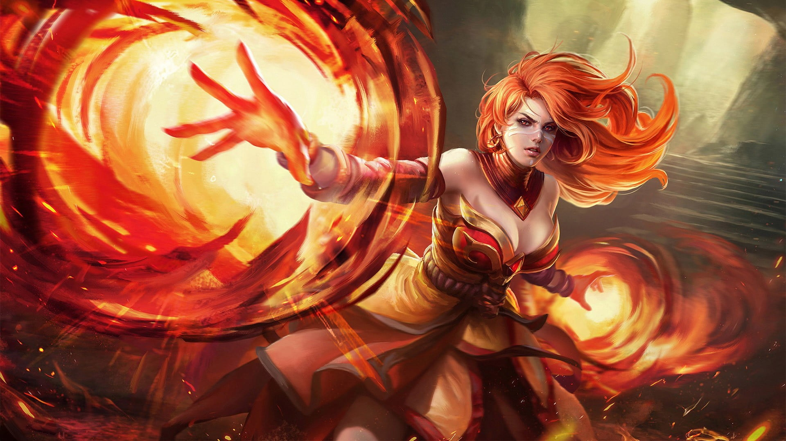
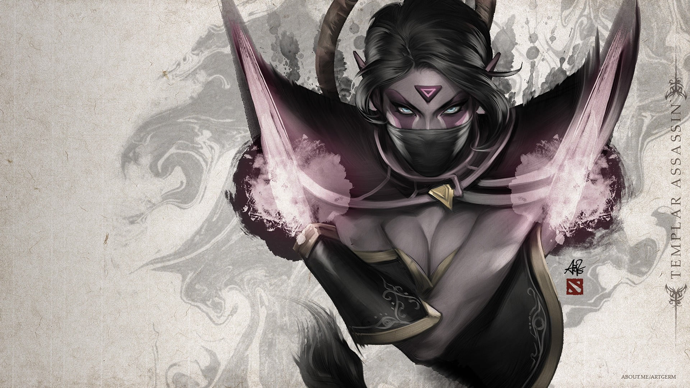
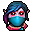
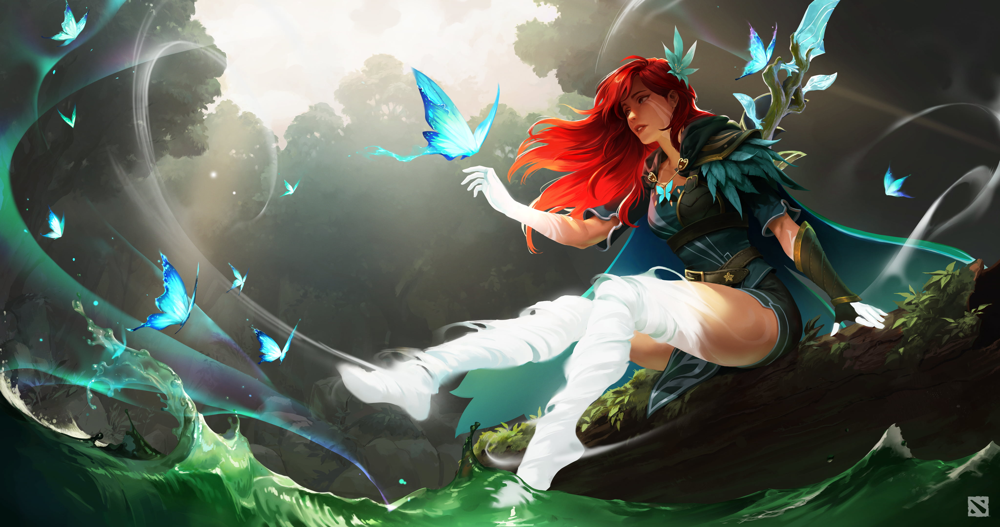
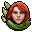

Sven is a rogue knight, half-Meranth by birth. After his father
was executed for violating the Vigil Codex, Sven's mother passed
away, leaving him an orphan. Tightly bound to his own personal
code of honor, Sven is a solitary warrior who wields the legendary
Outcast Blade to devastating effect. He travels alone, searching
for honor and glory, while acquiring substantial gold as a
freelance swordsman.
More Details »
Dota 2
Juggernaut
Pusher / Escape / Carry
Yurnero the Juggernaut, named after the martial tradition that he
swore to preserve and protect, is the last of his masked kind who
drowned beneath the waves that deluged the ancient Isle of Masks.
While his inanimate mask bears no readable expressions, each
motion of his blade arm is an expression of a lost art that yearns
to be remembered, and every ritual that he casts alone is but a
shadow of the Isle's once lively and rich traditions. No one has
ever seen the face hidden beneath the mask of Yurnero the
Juggernaut.
More Details »

Dota 2
Lina
Support / Carry / Nuker / Disabler
The sibling rivalries between Lina the Slayer, and her younger
sister Rylai, the Crystal Maiden, were the stuff of legend in the
temperate region where they spent their quarrelsome childhoods
together. Lina always had the advantage, however, for while
Crystal was guileless and naive, Lina's fiery ardor was tempered
by cleverness and conniving. The exasperated parents of these
incompatible offspring went through half a dozen homesteads,
losing one to fire, the next to ice, before they realized life
would be simpler if the children were separated. As the oldest,
Lina was sent far south to live with a patient aunt in the blazing
Desert of Misrule, a climate that proved more than comfortable for
the fiery Slayer. Her arrival made quite an impression on the
somnolent locals, and more than one would-be suitor scorched his
fingers or went away with singed eyebrows, his advances spurned.
Lina is proud and confident, and nothing can dampen her flame
More Details »

Dota 2
Templar Assassin

Carry / Escape
Lanaya, the Templar Assassin, came to her calling by a path of
curious inquiry. Possessed of a scientific bent, she spent her
early years engaged in meticulous study of nature's laws — peering
into grimoires of magic and alchemy, recreating experiments from
charred fragments of the Violet Archives, and memorizing
observations of the Keen recordkeepers. Already quiet and
secretive by nature, the difficulty of acquiring these objects
further reinforced her skills of stealth.
More Details »

Dota 2
Windranger

Carry / Escape / Support / Disabler / Nuker
The western forests guard their secrets well. One of these is
Lyralei, master archer of the wood, and favored godchild of the
wind. Known now as Windranger, Lyralei's family was killed in a
storm on the night of her birth--their house blown down by the
gale, contents scattered to the winds. Only the newborn survived
among the debris field of death and destruction. In the quiet
after the storm, the wind itself took notice of the lucky infant
crying in the grass. The wind pitied the child and so lifted her
into the sky and deposited her on a doorstep in a neighboring
village. In the years that followed, the wind returned
occasionally to the child's life, watching from a distance while
she honed her skills. Now, after many years of training,
Windranger fires her arrows true to their targets. She moves with
blinding speed, as if hastened by a wind ever at her back. With a
flurry of arrows, she slaughters her enemies, having become,
nearly, a force of nature herself.
More Details »